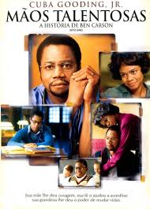
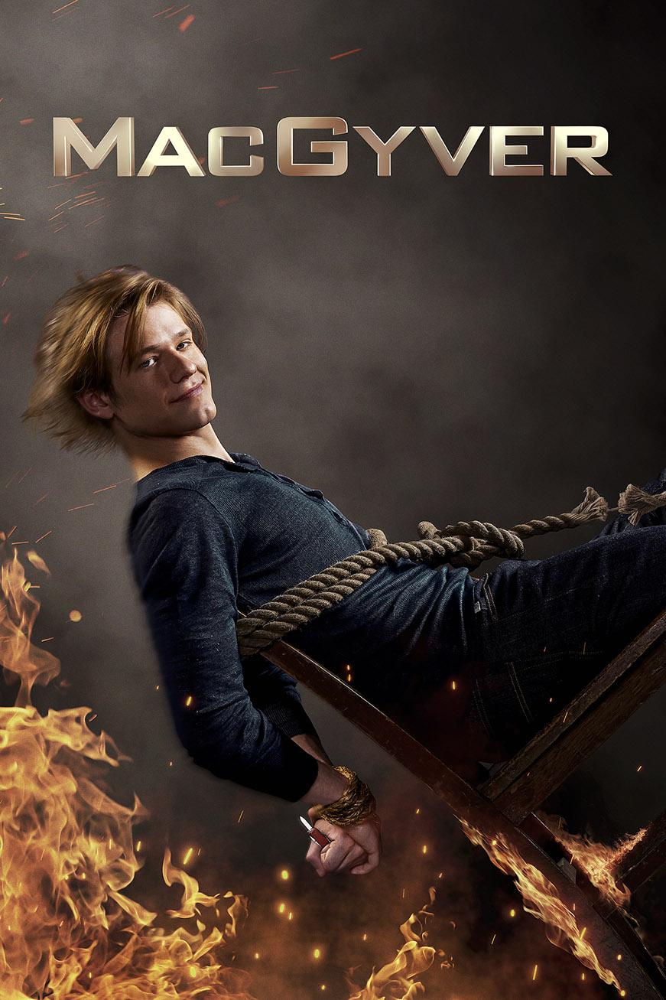
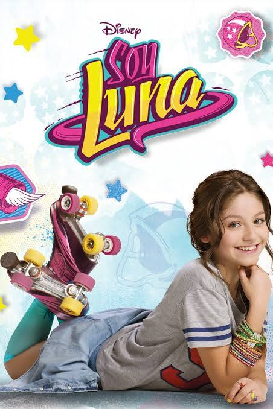
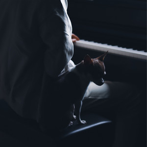
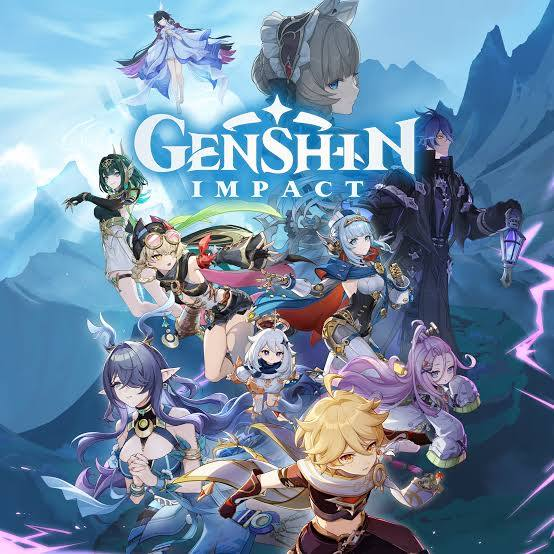
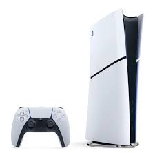

Meu Portal de Entretenimento Digital
Atividade: Criando um Portal de Entretenimento Digital
Sejam Bem-vindos ao Meu Portal de Entretenimento Digital! Aqui vou dividir em três seções para que fique de uma forma mais organizada.
A primeira seção será filmes e séries, a segunda será músicas e podcasts e a terceira games e tecnologia.
Filmes e Séries:
Aqui abaixo estão alguns dos melhores filmes e séries que você pode assistir:
Mãos Talentosas

Resumo: Filme baseado na vida de Ben Carson, mostrando sua trajetória de superação até se tornar um grande neurocirurgião. Filme cristão que retrata a confiança em Deus.
MacGyver

Resumo: Série de ação sobre MacGyver, um agente inteligente que usa ciência e criatividade para resolver missões perigosas sem depender da violência.
Soy Luna

Resumo: Série juvenil sobre Luna, uma garota que se muda para a Argentina, descobre segredos sobre sua vida e vive aventuras, amizades e romances enquanto segue sua paixão pela patinação.
Músicas e Podcasts:
Aqui abaixo estão alguns dos melhores álbuns e podcasts que você pode ouvir:
Projeto Sola

Resumo: Projeto musical cristão com canções profundas sobre fé, esperança e adoração.
Idea - (Gibran Alcocer)

Resumo: Composições instrumentais de piano conhecidas por sua delicadeza e emoção.
Café Investigativo
Resumo: Podcast voltado para histórias de crimes, mistérios e investigações reais.
Games e Tecnologia
Aqui abaixo estão alguns dos melhores jogos e notícias sobre tecnologia que você pode explorar:
Minecraft

Resumo: Jogo de sobrevivência e criação em um mundo aberto.
Genshin Impact

Resumo: RPG de ação em mundo aberto com aventuras e exploração.
Playstation 5

Resumo: Console de videogame da Sony com tecnologia avançada.
Tudo isso é somente minha opinião e meus gostos.